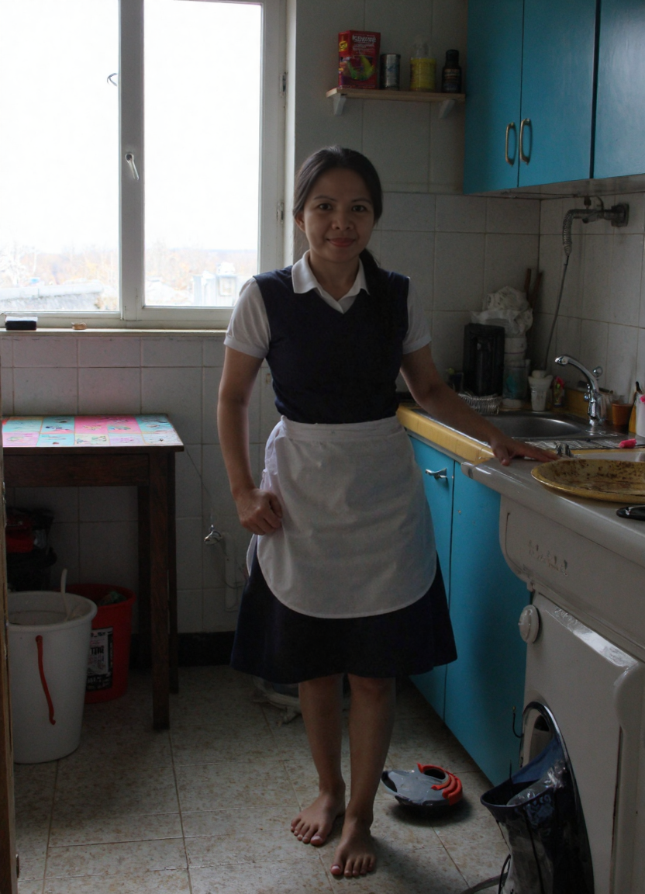
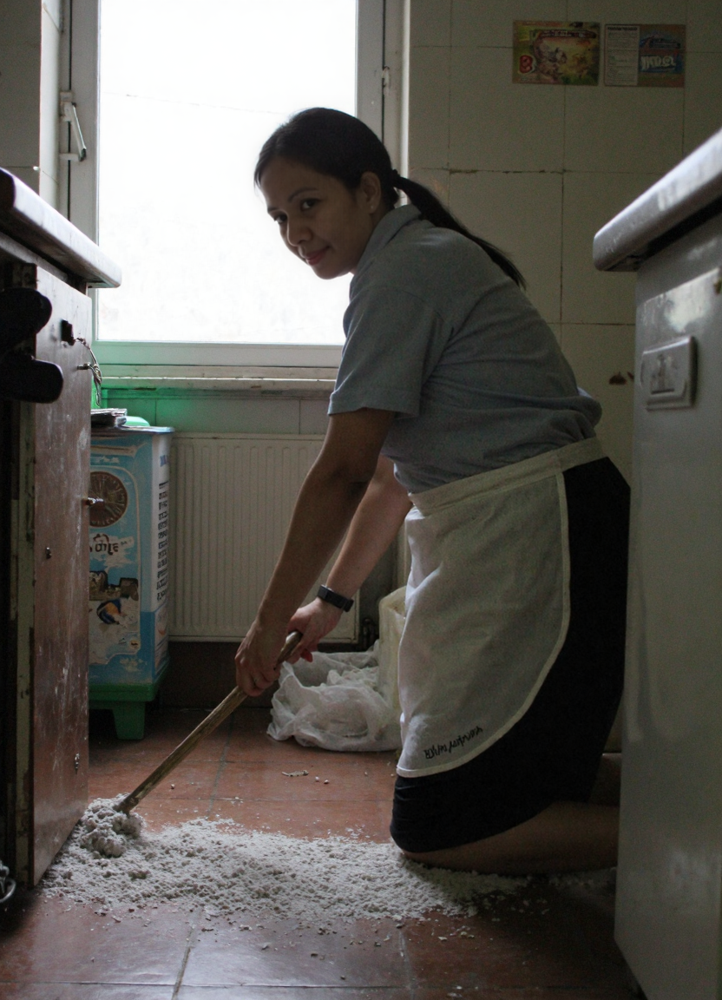
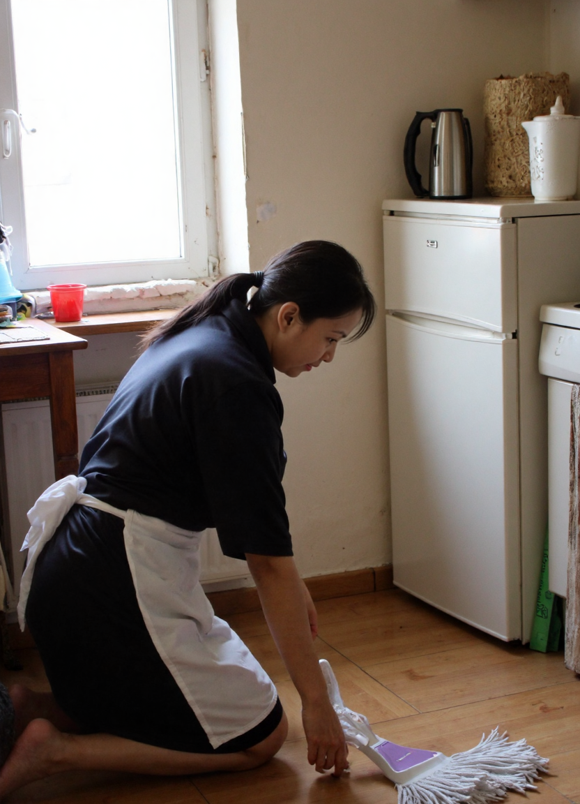
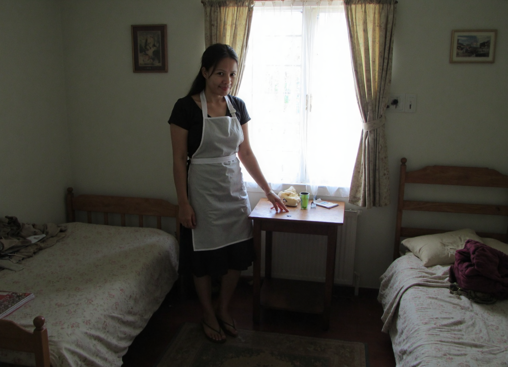
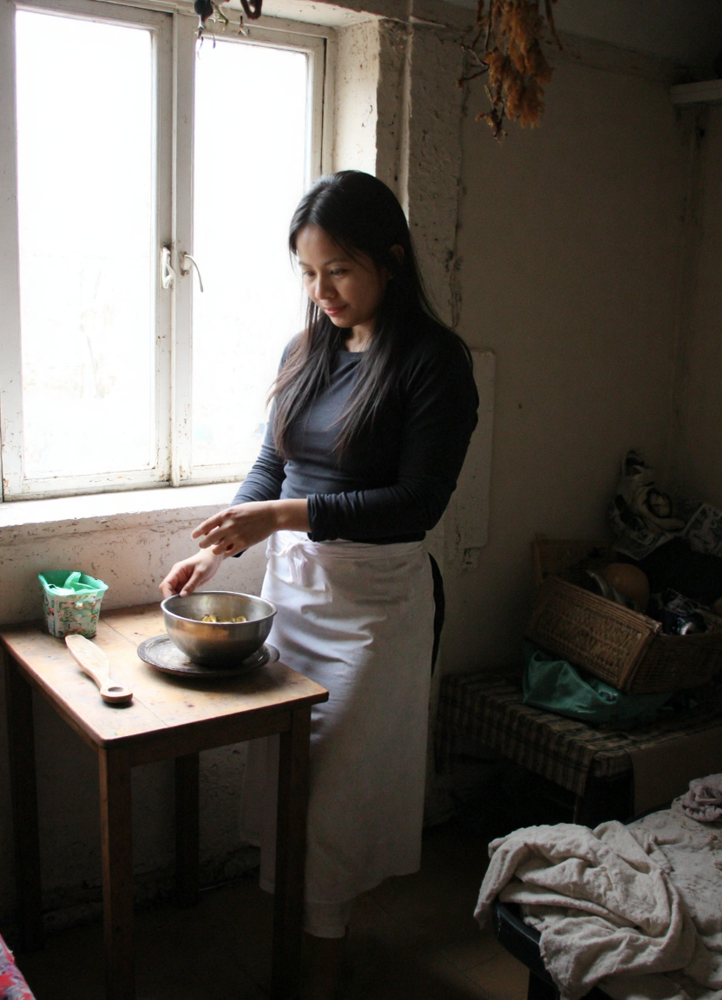
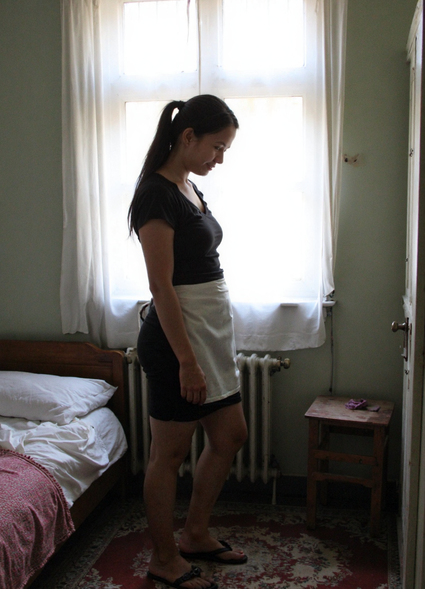
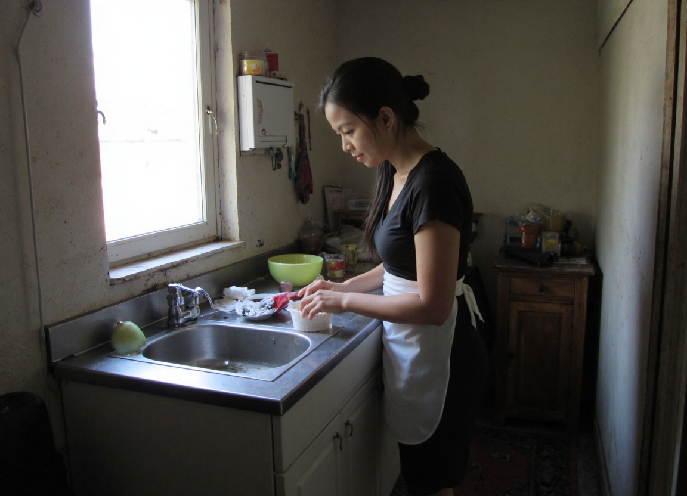
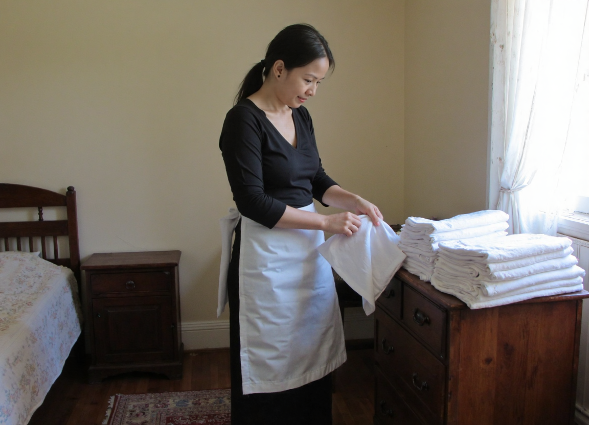
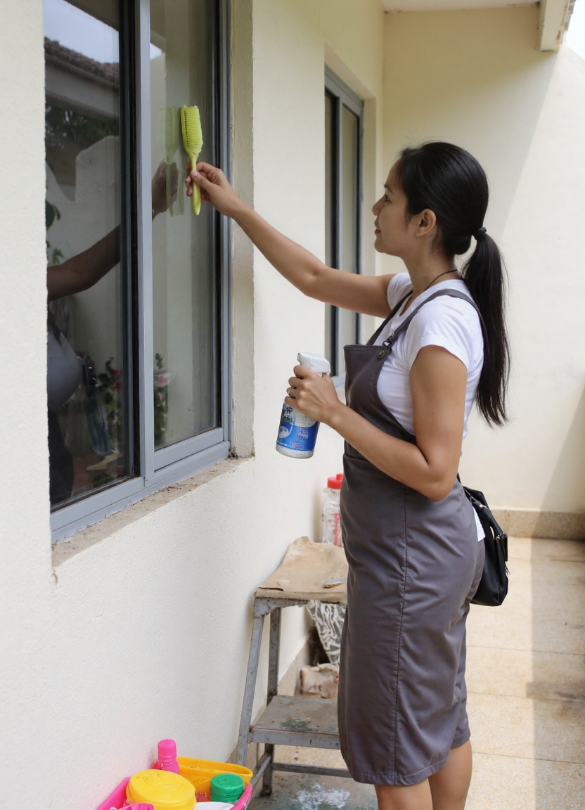

Domestic Helper 03
Reporting for duty. The uniform might say 'all work,' but there's a certain thrill in playing the part. What would you like me to take care of first?
Domestic Helper 05
Caught you looking. I don't mind the hard work, especially when I know I have such an appreciative audience. Maybe you could come a little closer and inspect my progress?

Domestic Helper 06
Sweeping up the mess, but my mind is definitely wandering. There's something deeply satisfying about making things tidy... makes the messy moments later that much better.

Domestic Helper 08
Putting my back into it. I know exactly how this looks from where you're standing, and honestly? I planned it that way. Enjoy the view while I finish up here.

Domestic Helper 09
A quiet moment by the window. The house is still, the light is soft, and I'm just waiting for you to come find me. We don't always have to be working, do we?

Domestic Helper 10
Prepping at the table, but I'd much rather be serving you. Pull up a chair—I promise whatever I'm making will taste even better if you keep me company.

Domestic Helper 11
Pausing in the bedroom. Making the bed always makes me think about messing it up again. It's so quiet in here... almost too quiet.

Domestic Helper 12
Lost in thought at the sink. My hands are busy, but if you were to slip up behind me right now, I definitely wouldn't stop you.

Domestic Helper 14
Folding the linens nice and crisp. I handle everything with care... just imagine how gentle these hands can be when they're not doing laundry.

Domestic Helper 16
Reaching high to get the glass perfectly clear. A little stretch, a little sweat... it's a good workout. Care to help me cool down after?

Domestic Helper 17
Up on my toes in the summer air. This little white dress catches the breeze perfectly. I hope you're enjoying the view from down there as much as I'm enjoying the sunshine.

Domestic Helper 19
Balancing on the edge. I've always been a little daring when I know someone is watching. Don't worry, I won't fall... unless it's for you.

Domestic Helper 01
Down on my hands and knees, making sure every inch is spotless. Though I have to admit, from this angle, it's hard to stay entirely focused on the floor... are you watching?